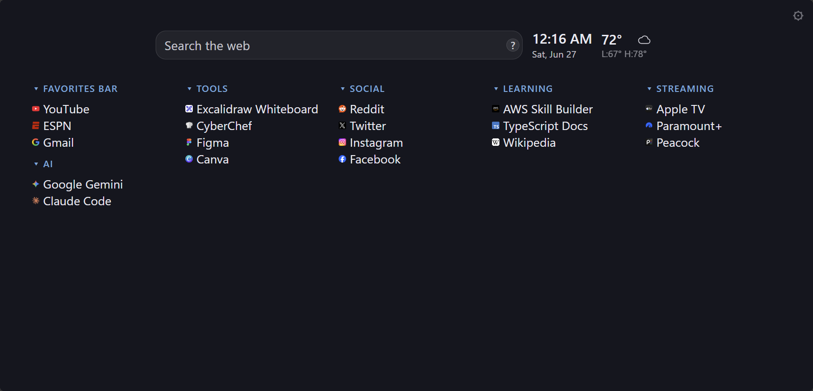
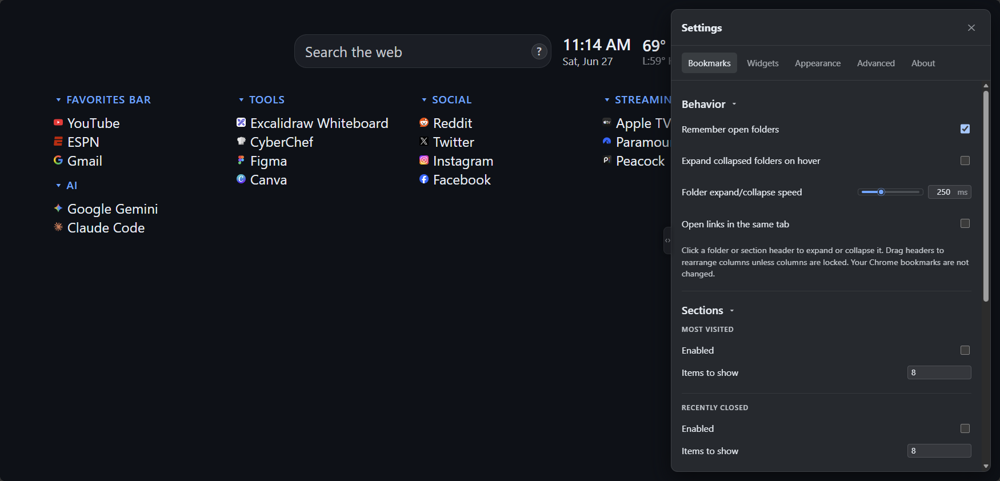
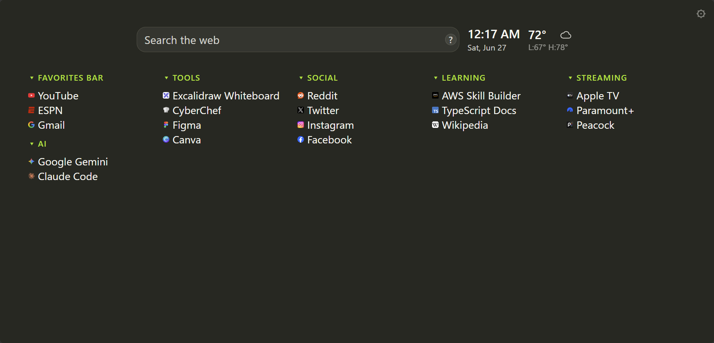
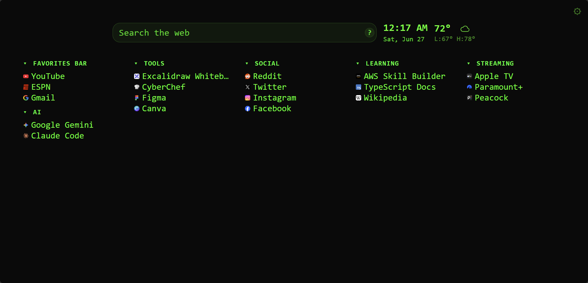
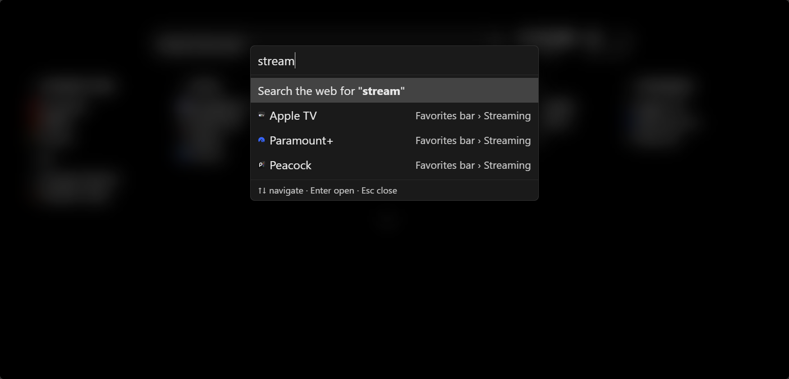

New Tab Plus
A bookmarks-driven, widget-extensible new tab page for Chrome.
User guide
Install
- Download new-tab-plus-v*.zip from the latest release.
- Unzip the file.
- Open
chrome://extensions, enable Developer mode, and choose Load unpacked. - Select the unzipped folder (it should contain
manifest.json).
Getting started
Open a new tab to see your bookmark columns, optional widgets, and special sections. Open Settings from the gear icon in the page header.

Your Chrome bookmarks appear as draggable columns. Add folders, stack columns, and rearrange the layout. Settings let you lock columns, remember open folders, and control link behavior.
Enable the search bar, clock, and weather widgets from Settings → Widgets. Weather needs a location configured in the widget settings and fetches forecast data from Open-Meteo when enabled.
Add columns for Most Visited, Recently Closed, Apps, or tabs open on Other Devices. Each section can be toggled and configured from bookmark settings.
Pick a theme preset or customize colors, fonts, spacing, and link hover effects. Advanced settings include custom CSS and layout import/export.
Settings
Open settings from the gear icon in the top-right corner. Bookmarks, widgets, appearance, and advanced options are grouped into sections you can switch between along the top.

Themes
Built-in presets change colors, fonts, and accents in one click. You can also fine-tune everything under Settings → Appearance.


Command palette
Start typing on the new tab page to open the command palette. Search your bookmarks or run a web search, then use the arrow keys to pick a result.

Keyboard shortcuts
- Start typing — open the command palette to search bookmarks or the web
- ↑ ↓ — move selection in the command palette
- Enter — open the selected result
- Esc — close Settings or the command palette
Backup & sync
Layout and most options sync through Chrome sync when signed in. Use Settings → Advanced to export or import your layout and options as JSON.
Help & feedback
Report bugs or request features on GitHub Issues.
Privacy policy
This policy describes what the extension accesses and what leaves your browser.
Summary
New Tab Plus does not collect your personal data, and we never will. There is no
analytics, telemetry, or user accounts. Settings and layout are stored locally in Chrome
(chrome.storage) and may sync through your Google account if Chrome sync is
enabled.
Data stored on your device
- Bookmark column layout and widget configuration
- Theme, appearance, and general extension settings
- Cached weather responses (when the weather widget is enabled)
Chrome permissions
- Bookmarks — read your bookmark tree to display and search bookmarks on the new tab page
- Top sites — show your most visited sites in the optional Most Visited section
- Sessions — show recently closed tabs and tabs from other signed-in devices
- Storage — save your settings and layout
- Favicon — display site icons next to links
- Search — run web searches using your browser's default search engine
Network requests
The extension only makes network requests when a feature that needs them is enabled:
- Open-Meteo (open-meteo.com) — geocoding and weather data for the weather widget. Requests include the location name or coordinates you configure; no account is required.
- Google Fonts — web fonts when a theme preset or setting uses them
- GitHub API — optional update checks when Check for updates is enabled in Settings → About. Only public release metadata is fetched; no personal data is sent.
Third parties
When network features are used, those services receive the data needed to fulfill the request (for example, a city name sent to Open-Meteo). Their privacy practices are governed by their own policies.
Changes
This policy may be updated when the extension changes. The date at the top of this section reflects the latest revision.
Contact
Questions or privacy concerns: open a GitHub issue.